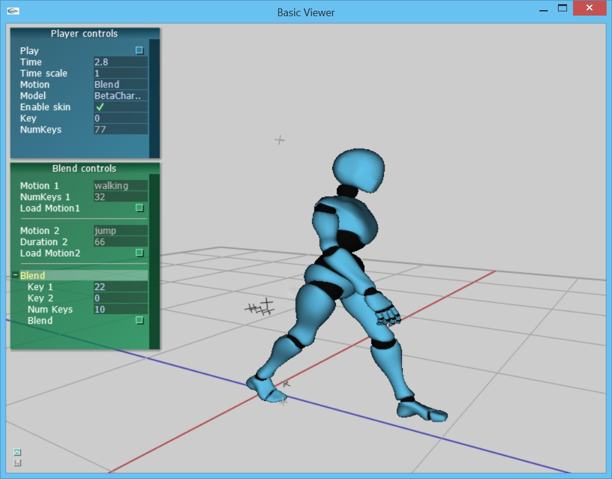

Motion blending
In this assignment, you will implement motion blending. After completing this assignment, you will be able to interactively crossfade between different walking motions.
User interface overview
The basecode includes a simple interface and 3D viewer for loading and playing BVH files. See below for a screenshot. By default, we will load a character and two BVH files.

The camera can be controled with the mouse:
- Left-button drag with the mouse to rotate
- Right-button drag with the mouse to pan
- Middle-button drag with the mouse to zoom
- 'f' button will focus the view on the character
The player control panel on the top left can be used to load and play files. The panel at the bottom left can be used to perform blends between motion 1 and motion 2. The blend panel displays the name and number of keys for motion 1 and motion 2. Motions can be changed by clicking on the "Load Motion" buttons. To blend, you need to set the key from which to start blending from motion 1 and the target key to finish the blend in motion 2. The number of keys to use for blending The startTime specifies where in motion 1 to start blending and the endTime specifies where in motion 2 to finish blending. The number of blend keys controls the length of the cross fade blend.
Assignment
1. (100 points) Crossfade. You will implement a crossfade between two motions. A crossfade transitions from a starting frame in motion 1 to a target frame in motion 2. The amount Implement MotionBlender::blend(). The cross fade will begin on motion 1 at startKey and end on motion 2 at endKey. Between these frames, you will blend pairs of keys while linearly varying the blend weight from 0 to 1. When the blend weight is 0, we get the start key back. When the blend weight is 1, we get the target key back. The length of the crossfade is determined by the number of blend keys.
- (10 points) Edit MotionBlender::blend to pass correct key parameters to the functions append, align, and crossfade. The blend function should combine motion 1 and motion 2 together with a smooth cross frade to transition between them and put the result into output.
- (25 points) Implement MotionBlender::append. Append should add keys from the given input motion to the output motion. Keys can be added by appending poses or by working with motion curves directly. When appending keys, make sure to use versions of the functions which take either the key ID or the key time.
- (25 points) Implement MotionBlender::align. The current motion curves contain global position changes for the root. By default, the blend will snap to the starting position of the next motion unless the target motion is translating to align with the end position of the starting motion. The Align() function will edit motion2 so that it's root position aligns with motion 1 at the starting frame.
- (40 points) Implement MotionBlender::crossfade. Compute the transition frames from motion 1 to motion 2 and append the result in blend.The blend weight should change linearly across the blend duration such that the weight is 0.5 halfway through the fade.
2. (25 points extra credit) Foot clamping. Detect foot contacts in the source and target motions to produce blends without foot sliding.
Build and Submission Instructions!